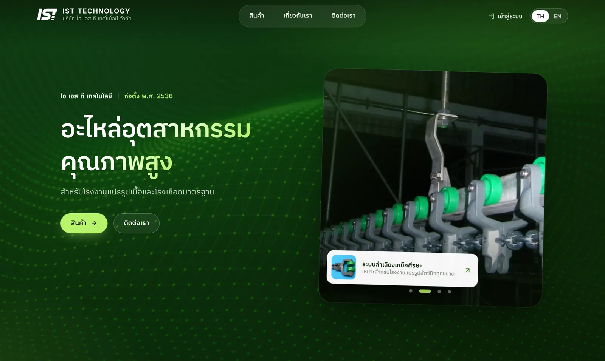

IST Technology
Website Design & Development
A fifteen-year-old website for an industrial parts supplier, redesigned twice: drafted in Figma, built by hand in 2025, then refined into the live site in 2026.
ROLEWEB DESIGNER & DEVELOPER · IN-HOUSE
YEAR2025 – 2026
BUILT WITHFIGMA · HTML · CSS · REACT
STATUSLIVE · ISTC.CO.TH

VERSION INDEX
SELECT A VERSION
VERSION {{ pj.n }} · {{ pj.type }}
{{ pj.client }}
{{ pj.label }}
{{ pj.desc }}
- —{{ pt }}
FIG {{ figN }} · DESKTOP · FULL PAGE
{{ pageNote }}
BUILT WITH
{{ t }}
BRAND · LOGO
Three logos, one company
Founded in 1993 as Inter Supply Technology, the company adopted the name IST Technology in 2001. The original boxed logo remained in use on the previous website and carried over into V1.
For V2, I reimagined the identity with a redesigned mark: a slanted IST wordmark paired with speed lines to convey movement and a more contemporary feel, with the T subtly shaped after the company’s core product. The slanted IST mark also works on its own as the site’s favicon.